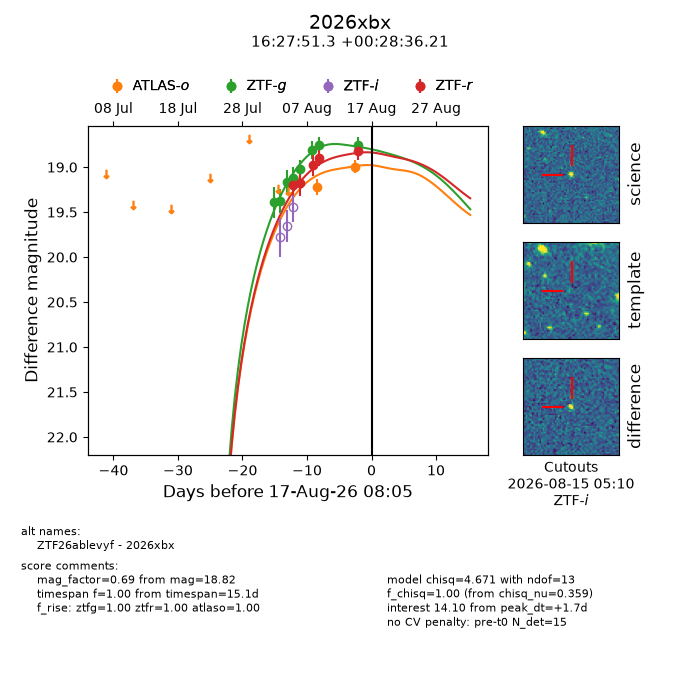
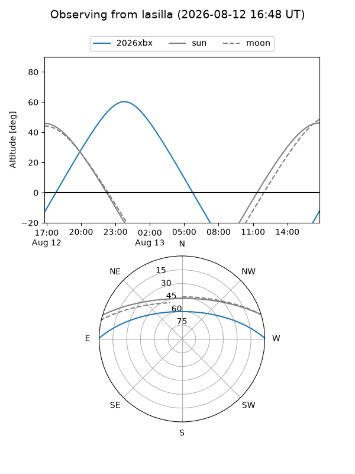
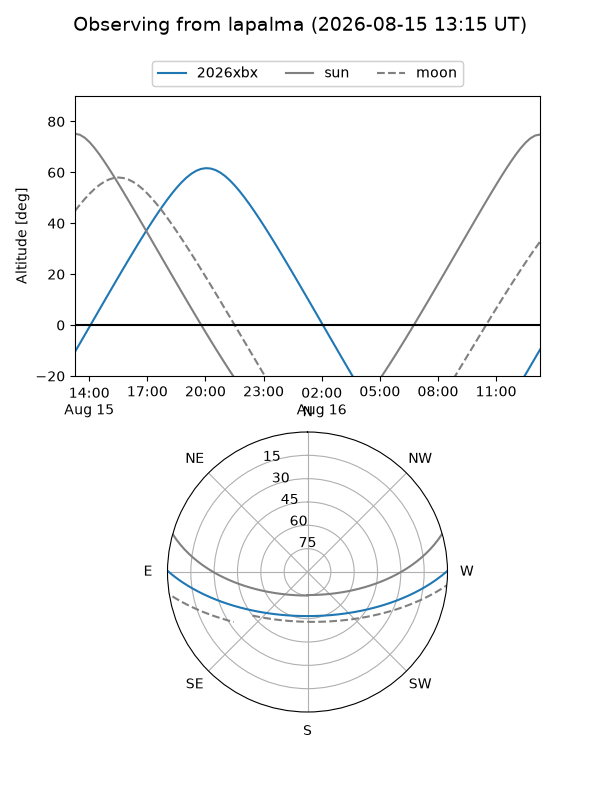
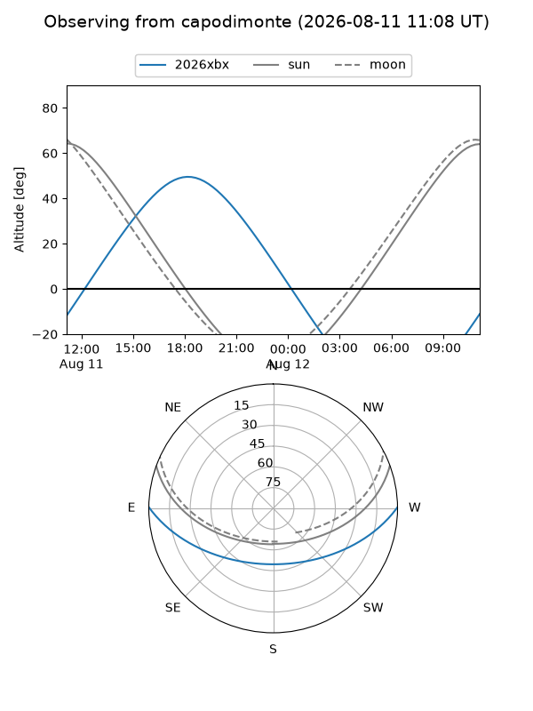
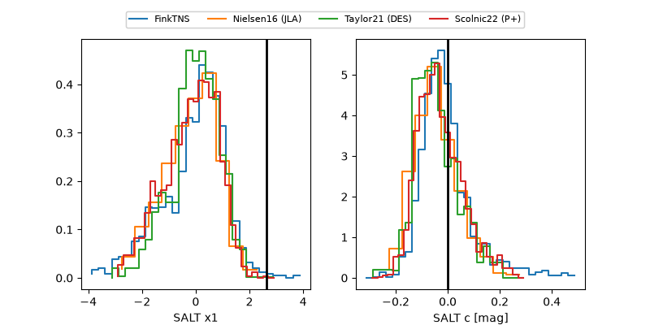

2026xbx
Target 2026xbx at 2026-08-17 08:09
Aliases and brokers:
FINK-ZTF: ztf.fink-portal.org/ZTF26ablevyf
Lasair-ZTF: lasair-ztf.lsst.ac.uk/objects/ZTF26ablevyf
ALeRCE-ZTF: alerce.online/object/ZTF26ablevyf
YSE-PZ: ziggy.ucolick.org/yse/transient_detail/2026xbx
TNS name: wis-tns.org/object/2026xbx
Direct TNS query: direct search
alt names
ZTF26ablevyf (ztf,fink_ztf)
2026xbx (tns,yse)
Coordinates:
equatorial (ra, dec) = 246.9639,+0.47672
equatorial (HMS+DMS) = 16:27:51.33,+00:28:36.21
galactic (l, b) = (15.1414,+31.70763)
Flags:
TNS type: nan
peak dt: +1.7
Photometry:
last atlaso=18.99, ztfg=18.75, ztfr=18.82
2 atlaso, 8 ztfg, 5 ztfr detections
Lightcurve

Visibility



Additional plots
